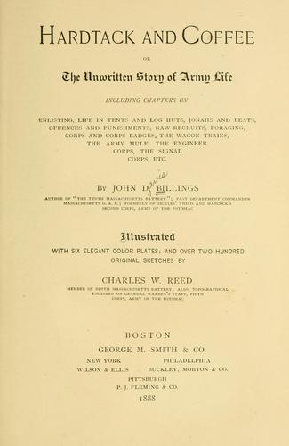
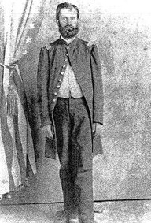
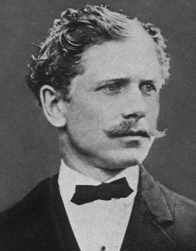
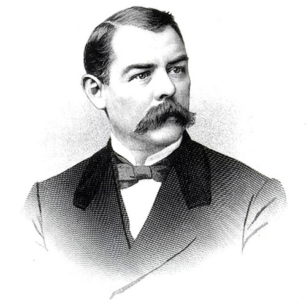
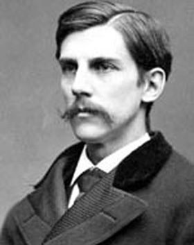
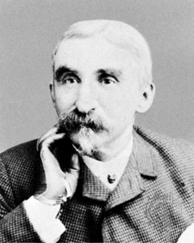
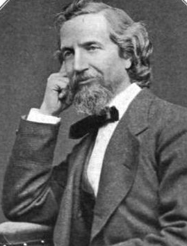

Believing war to be a concentration of all that is wicked;
and the most cruel invention of the worst enemy of the human
race. And believing that were the real truth with regard to
its extreme cruelty known, much would be done at least to
soften its horrors if not to eradicate it from the worlds
history. And knowing that the truth will never be known
unless those who have witnessed its heart-s[ic]kening scenes
record the same. I have written this Journal with a view to
telling some truths that will not be recorded in its
histories.
-- Daniel Bond, 1st Minnesota
But when a man has spent a week in toilsome marches
toward battle, and then faced the enemy when death was
hovering in the air, it is not easy for him to forget the
fatigue, the hunger and thirst, the blanket-bed by the
roadside, the hot skirmish on the picket-line, the gallop of
the battery into position, the steady advance in line of
battle, or the fierce charge at a turning-point in the
engagement. Though these scenes make but little impression
on his mind at the moment, they all come back to him in
after years, and he is surprised to find how clearly he can
recall each little incident. It is this faculty that leads
the veteran, whether he wore the blue or the gray, to talk
lovingly of the days when he carried the musket or the
sword.
-- George F. Williams, 5th and 146th New York
Life, nor liberty was of little value without a country
and let us hope when time has softened the feelings and
experience has shown the folly of our misguided countrymen
who fought against their own best interests that they will
realize that it has been best for them that they were
defeated, and the old flag restored and is again the only
emblem of authority from ocean to ocean and from the gulf to
the great lakes.
-- Lemuel Adams, 22nd Illinois
For you must know that then, the War, to all of us, was
everything, it was all in all. The past was forgotten; the
future we scarcely dared to think of; it was all then the
grim present.
-- John H. Brinton, Surgeon, U.S. Regulars
War, when you are at it, is horrible and dull. It is only
when time has passed that you see that its message was
divine.
-- Oliver Wendell Holmes, Jr., 20th Massachusetts
For that brief period, at least, we lived over again the
memories of days of war and battle; of the days when the
destinies of our Country trembled in the balance, and where
the terrible stake was the future of a Great Nation. We, who
were of that party, have lived upon the heights--have
breathed anew the air of patriotic service, suffering and
devotion, and have returned better men, better citizens,
truers of our Country than we have ever been before. I can
hardly yet adapt myself to Boston and to the duties of
today. I have lived over the days of forty-six and
forty-seven years ago.
-- Henry M. Rogers, Massachusetts Volunteers
Wars do not end when the shooting stops. When young men
are taken from their homes and civilian lives and taught new
and terrible lessons of war, the impact stays with them for
the remainder of their lives. Increasingly, they find it
necessary to deal with the experience, to reinterpret its
significance and reevaluate its impact on their self-image.
The ways in which they do this can mean a great deal for
their sense of self-worth. It can also delineate the place
of that war in the culture of their nation.
As time went by, veterans were drawn to reliving the war
through their written memories. Those writings reveal a
great deal about how the war affected the rest of their
lives. Reminiscences can be useful in understanding how the
soldier felt during the war, but they are even more valuable
in revealing how he felt about the war long after the last
shot had been fired. They are a reflection of his attitude,
enriched by the perspective of time, as he entered middle
|

Most veterans' memoirs had a small
readership, but a few became bestsellers. Among these
is John Billings' Hardtack and Coffee, which
is still regarded as one of the finest accounts of
Civil War soldiers' life put to paper.
|
age. Did he still believe that the war had been worth
fighting? Had the experience of battle changed him? Was
America a better place without slavery in the South? What
kind of memories did he choose to write about? Why was he
writing, and who was he writing for?
At first, it was understandable that the Northern soldier
had no interest in telling about the war. It was too hard to
think about it for several years after Appomattox. Too full
of "raw facts," they wanted to heal, not evaluate. Many of
them consciously made vows not to speak a word of their
experiences, at least for the time being, and the fact that
few memoirs were published for at least fifteen years after
the end of the war indicated that they were men of their
word. As J. T. Holmes of Ohio put it: "In those days the
great interest lay rather in what was before than in what
was behind us. The time to look backward either at the war,
or at life, in the general sense, had not come to us. We
were young men yet and the war was not two years old."
As time went by, these attitudes changed. Hard memories
softened, and distance lent perspective to the veteran. He
found it possible to deal with the war as a conscious memory
and to ponder it as a significant experience in his life. By
the 1880s, more and more Northern veterans were taking pen
in hand to explore their personal past. By the 1890s, what
had started as a tentative trickle became a deluge. The
Northern book and periodical market was awash in a sea of
memoirs, reminiscences, and diaries written by everyone from
cooks, privates, and chaplains to colonels, generals, and
political leaders. Many other men chose not to publish their
memories, preferring only to write them down and file them
among family papers. Still others only spoke of the war to
friends and relatives, perhaps to have their experiences
remembered and passed down secondhand to succeeding
generations. By whatever means, the Union veteran
dramatically broke his silence after the passage of nearly a
generation, and the war became real once again.
They created one of the most remarkable bodies of
literature in American history. No other event inspired so
many books, articles, and unpublished texts as did the Civil
War. The Northern veteran needed only some impetus to set
him to writing. Many were pushed into it by requests from
sons, daughters, nieces, and nephews for information about
their role in the great war. Family friends, usually
youngsters, also cajoled veterans for stories about their
experiences.
Even more important than family and friends were the
former comrades of the veteran; they inspired one another to
write. At veterans' reunions, the call repeatedly rang out
to record what had happened before time took its toll on the
graying army that had saved the Union. As they had supported
one another on the battle line, these aging men now sought
to reinforce the bonds of the military family by telling of
their time in the army. Their purposes were entertainment,
commemoration, and the recording of factual information to
keep the story straight. Many also wanted the nation's
memory of the war to be well-balanced; they were afraid that
the many memoirs written by generals would give the country
the impression that the rank and file had had nothing to do
with winning the war. Justice had to be served for the
common soldier, civilians had to be informed about the facts
of the army and the war, and young men had to be made to
"realize what war really is." The Union veteran took his
role as a citizen-soldier seriously; he also took his role
as a historian seriously, but above all, he wrote for
himself and for his comrades. Nixon B. Stewart of the 52d
Ohio was typical of the veteran-author. For years he had
wanted to write the history of his regiment but was not
prompted to take action until he gazed at a flag standing in
the comer of the assembly hall where his comrades were
holding a reunion. "And instantly some strong nerve of mine
felt down its way at last to that period point, and almost
before I knew it, I was writing my heart out in admiration
and love for the courage and fortitude of those comrades of
mine, who were splendid in doing, and grand in suffering."
These amateur authors had to grope their way through the
writing process, much as they had had to struggle to learn
the art of the warrior in 1861. The fighting on this
literary field of battle was less deadly. The great majority
of memoirists had no experience in writing for publication,
and some of them openly apologized for what they were
certain would be texts "devoid of literary flavor." Whatever
they lacked in terms of accepted style these books,
articles, and essays made up for in candor and sincerity.
The authors experimented with format, some of them believing
that a diary would be more personal and therefore more
interesting to the casual reader. Others based their
narratives solidly on a rereading of letters or diary
entries long since buried in trunks and forgotten in attics.
Several veterans were surprised at how difficult it was to
write for publication, and they devoted much time and energy
to learning how to do it properly. Melvin Grigsby, for
example, had been asked to tell his story to so many
acquaintances after the war that he decided to write a book
to save himself from having to repeat the narrative over and
over. Yet he found it so difficult that he postponed the
writing until "through reading and education" he acquired "a
better command of language." Other veterans regretted
confining themselves to the written form alone and longed
for the opportunity to embellish their stories with
gestures, eye contact, and sound. A few recognized that when
they wrote for a wider audience than their immediate circle
of family and friends, their language, style, and even the
content of their narratives changed. Yet they all attacked
the role of author with the same kind of perseverance they
had used to take Vicksburg or Richmond.
Not all veteran memoirists apologized for their lack of
sophisticated literary style; some were proud of their
rough-hewn writing. Far from "well rounded sentences, or
flights of eloquence," they presented the reader with blunt
words, stubby sentences, and stark images. "Those were
rugged times," asserted Charles O. Brown. "The words which
would recall them, even briefly, must not be too smooth."
Oddly, numerous soldier-authors felt it necessary to
apologize for writing a book about their own experiences,
afraid that readers would view them as egotistical. With a
charming modesty, these authors graciously acknowledged that
other soldiers had shared and exceeded their own
experiences. They had no intention of aping the self-serving
puffing that characterized so much of the writing produced
by generals. They were humble, self-giving men in the war,
and they continued to be self-effacing in peace. Some of
them even played with this theme. Charles Morton cleverly
wrote of his reminiscences of Shiloh:
I desire it to be understood that I am not fully
persuaded that I fought that great battle all alone on our
side, nor that I can convince you now that it is to be
greatly regretted that I was not in supreme command at the
time. And I further trust that I will be exempt from any
accusation of an egotistical desire to parade my personal
prowess in the battle, when I tell you frankly in advance
that the most prominent feature of my conduct was the tall
running I did; and if the pronouns I and we seem
conspicuous, let it be understood that it is merely for
convenience of brief expression.
As they struggled with writing, the soldier-authors also
began to deal with memory itself. They were fascinated by
the process of remembering events, emotions, and images that
they had suppressed for so many years. J. T. Holmes had
completed his book on the 52d Ohio; it was 1898, and he
spent most of the night reading proof sheets. It mattered
not to him whether the reading public found an interest in
his words, for the personal experience of reliving the war
had been overwhelming for him. "I have lived over again
these thrilling years," he wrote. "No others in my three
score can begin to compare with them in depth of interests
and feelings, involved and evoked; in the burns and scars
from the war that scorched and withered by many a touch; in
the profound and moving tragedy that passed like a horrid
dream, with its lights and shadows, before my youthful
eyes." Writing obviously was therapeutic for Holmes, but it
also reminded him of his age and mortality. The war was
over, and with the passing of the veterans all would "soon
be history, memory, silence, only."
Holmes realized, as did many other memoirists, that
memory lay in the subconsciousness of the veteran to be
called upon when he was ready to relive the war. James R.
Carnahan of Indiana compared it to a painting, except that
the soldier's vision of war was imprinted by fear,
suddenness, and harsh sensual experiences rather than the
calm repose of an artist working in his studio. Although
vivid, the war vision inevitably grew a bit dull over time
and was partially replaced in the veteran's consciousness by
his civil preoccupations. Then, at some point, it came back
with something like its old clarity. The sight of a face or
the sound of a voice could trigger this process for
Carnahan. The connection between sound and memory was so
strong for New Jerseyan Ira Seymour Dodd that he crafted an
entire essay about his experiences at Chancellorsville
around it. Entitled "The Song of the Rappahannock," it
deftly wove together several variations on the theme of
sound, silence, and battle. "The Song has been silent for
more than thirty years. In another thirty years it will
cease to be a living memory save to a handful of very old
men. But those who once heard can never forget its weird,
fantastic, sinister tones." At the end, Dodd had heard
whippoorwills singing at night after the sound of the firing
had ceased on the corpse-strewn field. He still could not
hear the song of that bird, more than thirty years later,
without thinking of Chancellorsville.
Not only sound, but also smell, served the veteran as a
trigger for memory. James O. Smith had wandered over the
field of Antietam to satisfy his morbid curiosity about
death. The smoke from the fighting had not yet dissipated,
but the smell of rotting flesh had already begun to fill the
air. It mingled with the odor of pennyroyal, an aromatic
plant with small blue flowers. The contrast of the smell of
the wildflower and the smell of death was so vivid for Smith
that it "added horror upon horror to the scene. The smell of
pennyroyal will to this day bring vividly to my mind all the
terrible sights and events of that afternoon."
After familiarizing themselves with the mechanics of
writing and calling up the stored memories of their youth,
Northern veterans turned their attention to the content of
their memoirs. These writings fell into four broad
categories. First and most significantly, authors recalled
and reasserted their faith in the cause that had impelled
them to enlist in 1861. Second, a small number of
veteran-authors completely rejected the cause. They became
something of a "lost generation" of the Civil War era,
believing that ideology and patriotism were hollow
incentives for war and that their own lives had been warped
by their battle experiences. Viewing their sacrifice as
useless and their youthful enthusiasm for service as naive,
they had clearly lost their faith in the cause. A third
group of authors held somewhat similar views but came to a
different conclusion. They avoided any expressions of faith
in the cause but found new faiths to believe in. Instead of
ideology, they used devotion to comrades or to a philosophy
of personal development as valuable concepts around which to
build a satisfying view of their war experiences. Finally, a
fourth and more complicated group of authors avoided the
dark side of their war experiences as much as possible in
their memoirs, preferring to concentrate on the "good"
aspects such as amusing camp stories, the excitement of
living outdoors, the comradeship of good friends, and the
novelty of military life. These men did not dwell on the
cause or paint war as a horrible experience or search for
new faiths to believe in, yet they were not necessarily
anti-patriotic, disillusioned about the war, or insensitive
to battle's true nature. A variety of factors explained why
they refused to either denounce war or praise it as a useful
endeavor.
The proportion of men who fell into each of these four
categories was uneven. Of the fifty-eight memoirists
consulted on this topic, nineteen were overfly ideological
in their judgments of the war experience. Three were "lost"
soldiers, and four searched for new faiths to believe in.
Twelve veterans were careful to avoid describing the horrors
of war, and twenty men frankly described death and battle
but made no judgment on it. Overwhelmingly, these memoirists
asserted faith in the cause, chose to avoid negative
reporting on the war, or displayed no difficulty in dealing
with its memory.
Remembering the Cause
The first group of authors, those who vigorously
reasserted their faith in the cause, was the most prominent.
Together with the last group, whose members concentrated on
the comradeship of the war experience, these men represented
the overwhelming majority of Northern veterans. The
ideologically committed ex-soldier made his views known in
reunion speeches as well as in books and other publications.
His opinions were strong, eloquently expressed, and often
rather sophisticated and broad in their implications. He was
the thinking veteran, highly concerned with making
ideological sense of the most disruptive experience in the
history of his nation.
The ideological veteran also could be rather shrill in
his concern for the future of the nation. He often couched
his views in the form of a warning, for he feared that the
country was forgetting why the war had been fought in the
first place. Decades of peace and prosperity, the onset of
rapid industrialization, and a modern consumer economy had
dulled the people's sensitivity to the moralistically
charged issue of slavery that he believed was involved in
the war of secession. If America forgot the ideas that
underlay the conflict, it would lose the most important
lessons learned from it, such as the need for an
ever-vigilant population to safeguard liberty. These
veterans thought that there had to be a higher, transcendent
meaning and result coming from this war or else their
sacrifice was rendered useless.
R. L. Ashhurst of the 150th Pennsylvania spoke of these
things at a regimental reunion held in 1896 on the field of
Gettysburg. He reminded his audience of Stephen Crane's
novel The Red Badge of Courage and the author's vivid
re-creation of the life and fears of a soldier in camp and
in battle. Ashhurst thought Crane had captured that subject,
but he was irritated, even frightened, by Crane's avoidance
of ideology. The novel said nothing "of the great and
glorious object of the sacrifice, nor of the noble glow of
true patriotic fervor which, as we know, was the governing
note and tone of the chords of the soldier's heart, and
without which the story of the American soldier's deeds and
endurings is but as a tale told by an idiot--full of sound
and fury, signifying nothing. On the contrary, if we knew
not better we would arise from its perusal with the feeling
that nothing could justify or compensate the horror and
suffering undergone." For Ashhurst, as for so many other
veterans, it was not sufficient to describe the true nature
of battle. One also had to endow it with meaning and
significance. The war had not been a mere conflict of
opinion, as another veteran pointed out, but a conflict of
right versus wrong, and the postwar public had to be
reminded by those who had fought it which side had been
right. It had been not only a war to save the Union, as
William P. Hogarty asserted when he reminded his reunion
audience of the abolition of slavery, but a war "to make the
Union worth saving."
After reminding readers of the cause, veterans went on to
reassert their conviction that ideas had been the basis for
their motivation to fight. Even after the war was over and
victory was assured, they continued to believe that any
level of personal sacrifice would have been a price worth
paying for the cause. When speaking of the deaths of others,
not surprisingly, they had no difficulty asserting this
theme. Accepting the general principle of sacrifice for the
greater common good was easy, and it was repeatedly done by
many veterans in reunion speeches as well as in published
and unpublished memoirs. The authors often noted that an
individual life was "but a mere pittance compared to and
with the value of the results that we hoped" to gain through
winning the war. Indeed, Ira Seymour Dodd crafted an essay
entitled "Sacrifice" in which he movingly wrote of the
deaths of the best and the brightest that the North had to
offer. He firmly argued that the result of the conflict was
worth the price in suffering. In a much less poignant, more
pragmatic way, another veteran listed all the benefits he
believed that his fellow soldiers had achieved for the
nation through their defeat of the Confederacy. He also
listed the cumulative costs of the war--statistics regarding
money spent, soldiers killed and wounded and came to the
predictable conclusion (he was speaking to a veterans'
group) that it was all worth it.
Parading dry numbers before an audience that was already
committed to the conclusion was one way to reaffirm the
satisfying image of a good war justly won. But an even more
significant and meaningful way was for a veteran who had
suffered personally to speak mainly to himself. In an
unpublished autobiography, Lemuel Adams of Illinois
addressed this theme. He had been medically discharged from
the service near the end of 1862 after enduring "severe"
hardships, but he "never regretted the part I took in that
|

Lemuel Adams
|
great struggle; many lives must be sacrificed and much
blood was necessary to be shed, and my life and my blood was
no more precious nor my life more valuable than thousands of
others." Jacob C. Switzer of Iowa was even more seriously
affected by his war experience but even more eloquent in his
assertion of continued faith in the cause. Having lost a leg
because of wounds received at the battle of Winchester in
September 1864, he was disabled for the traditional
occupations his fellow veterans adopted after the war.
Switzer felt "at sea" in civilian life, yet he was not
disheartened. "I came home fully satisfied with the results
of my service with regards to its effects upon myself; glad
that I could say I served until the cause for which I gave
so little, compared with the sacrifice made by so many, was
won honorably, the Union saved, slavery dead, and treason
made odious."
There obviously was a strong self-interest operating in
the minds of veterans who so strongly proclaimed their faith
in the war experience. To deny its worth would be to deny a
huge and important part of their lives. It was a
self-assurance that they had played a significant role in
great events and had helped shape the contours of a growing
society. Ohioan Levi Wagner admitted that he was proud to
have served in the Union army. "Why should I not be? Is it
not a pleasure to us old landmarks of today, who are now
old, feeble and gray, that in looking back over lifes way,
we can, with some degree of pride, feel that somewhere in
the past we have not been altogether useless; that our lives
have not been spent in vain, as we through our valor and
patriotism can today show the whole civilized world one of
the greatest, best and undivided governments that exists on
the face of this earth."
Besides the sense of personal fulfillment that Wagner
noted, veterans cited a number of other themes when arguing
that the results of the war were worth the cost. Some argued
that army service had improved the character of the Northern
soldier, giving him "a better physical and mental manhood.
The discipline of battle purified them; suffering taught
them humanity and self-reliance; dangers and hardships,
endured together, bound them to their comrades by a type of
friendship that was ennobling. Of many it can be said; 'The
war made men of them.'" Other veterans noted the explosion
of material progress that followed the war, resulting in
factories, growing economies, and new inventions. Charles
Robinson left service in the 2d Michigan and moved to
Chicago, where he helped build the first packing house that
would help turn this modest lake town into a world-class
city. "Looking back since then," he wrote, "I have felt that
I helped initiate the new era--the great industrial and
expansion movement that followed the war. That era was to
bring great changes to our home community, which had
supported the war so faithfully."
The impact of the North's victory became headier the more
veterans dwelled on it. Many were convinced that it had
spurred the progress of democratic institutions in other
nations. The destruction of slavery was uppermost in these
men's minds, for it eradicated what they now saw, in the
postwar atmosphere, as a fundamental weakness in the
American nation. "We now know that the glorious result of
universal freedom is worth the price we paid," asserted
George E. Sutherland before a veterans' reunion in 1888.
This view even led to a devaluation of the accomplishments
of the Founding Fathers. Before the war, the generation of
George Washington, Thomas Jefferson, and John Adams had
always been viewed with reverence by a public awed by the
sufferings of the Revolution and the apparent majesty of the
Constitution. Now, many Northern veterans saw flaws in those
accomplishments. Compromises on the existence of slavery had
set the stage for the Civil War nearly a century later. The
men who had risked their lives on the fields of Bull Run and
Peach Tree Creek could now claim to have corrected those
errors and saved from destruction the nation that the
Founding Fathers had only imperfectly created. This was an
awesome revision of what had been a fundamental article of
political religious faith in a nation that was still
undergoing the pains of adolescence.
Ideologically committed Northern veterans sought to
clothe the memory of the war with nobility. They were
frightened by the growing tendency to ignore the fervency
that had moved so many Northerners in 1861. As the sections
grew closer together by the 1880s, and as the bitterness of
the war subsided, they grew more apprehensive that their
1865 victory would be robbed of its meaning. The
"lost-cause" mythology was taking root. Created by Southern
writers, many of them former Confederates, this
interpretation of the meaning of the war deemphasized
slavery as a cause of the conflict, highlighted
constitutional issues rather than moralistic concerns as the
impetus for secession, and portrayed the Confederates as
noble champions of a charming, highminded, yet tragically
doomed way of life. Even the Northern public found this
romantic legend irresistible, as novels, essays, and
Confederate memoirs refocused the nation's understanding of
the war. Calls to remember the true nature of the
Confederacy rang out at veterans' reunions and suffused the
pages of many Union veterans' memoirs. They sought to remind
people that one should support the reconciliation of North
and South, that the Confederate soldier deserved respect for
the sacrifices he endured, but that there was just no way to
compare the Southern and Northern causes. As George R.
Skinner of Iowa noted in a reunion speech, it would be
impossible to argue that a Confederate victory in 1865 would
have had the same benefit for the nation as a Union triumph.
Do not apologize for being a Yankee, he told his fellow
veterans; boldly admit that the Northern cause was right and
the Southern cause was wrong. Teach America the "truth" of
the war's real issues. There certainly was a poignant sense
of loss in the urgings of veterans like Skinner, as they
clearly began to sense that although they had won the
military conflict, they were fast losing the battle to shape
the nation's memory of it.
The vast majority of ideological veterans expressed
themselves in factual writings, but a tiny minority tried to
write fiction as well. John William DeForest, the
Connecticut captain who produced so many valuable
descriptions of combat in his memoirlike essays, also
produced one of the most widely read novels of the war,
Miss Ravenel's Conversion from Secession to Loyalty.
Published in 1867, before the lost-cause mythology took
root, the story had a cast a characters who represented
different types: the ideologically committed New England
volunteer, the educated Southerner ostracized with his
beautiful daughter to the North for his antislavery views,
the former slave owner who remained loyal to the Union.
Throughout this long narrative, DeForest vividly and
accurately described battle for what he knew it to be. He
portrayed Southern culture as degraded by the existence of
slavery. He reminded his readers of the shrill bitterness of
the conflict, the unforgiving nature of convictions on both
sides, and the demand to be all one thing or all the
other--to take sides and believe in the transcendent
importance of values and ideas.
The novel was more than this as well. DeForest deftly
portrayed the two kinds of Unionism. New Englander Colburne
was righteous, abolitionist, serious about the moralistic
implications of the war, a vigorous prosecutor willing to
accept nearly any policy to destroy the Confederacy. John
Carter, the Southern Unionist, refused to see any moralistic
component to the war. A sentimental sense of duty to
American nationhood impelled him to fight for the North, but

John William DeForest
|
he did not condone abolition or the self-righteousness of
his comrade Colburne. Carter's degeneracy, his indulgence in
debauchery and lechery, was portrayed by DeForest as
typically Southern. His amorality mirrored the conservative
Unionist's attitude toward Lincoln's emancipation policy:
that it was only an incident, not an essential part of the
war's meaning. Lillie Ravenel, the exiled daughter,
gravitated from one man to the other, thus converting from
one extreme of Unionism to the other. She initially shared
Carter's views but suffered because of his infidelity.
Lillie became a more serious and politically aware person as
she turned her affections toward Colburne. Her political
conversion was symptomatic of a moral conversion. DeForest
took joy at the triumph of emancipation and the Union
together, and he expressed that jubilation with the personal
transformation of Lillie, the eventual death of Carter, and
the success of Colburne. Written at the beginning of Radical
Reconstruction, this novel sent out a strong, resonant call
for ideological purity.
Veterans who remained committed to the cause used a wide
range of forms, from the novel to unpublished memoirs, to
express their faith. Public speaking, especially before
veterans' groups, was the venue for the most strident
assertions of ideology. The style and passion of those
speeches struck at least one modern historian as suspicious,
possibly indicating that the veteran felt compelled to deny
the horrible reality of war in order to perpetuate
jingoistic attitudes toward the conflict. But there is no
reason to assume that veterans changed their views to suit
their audiences. The speeches they delivered to regimental
reunions were not false or exaggerated simply because they
were patriotic. If veterans did not dwell on the horrors of
war, it was because they had a resilient faith in the
results of the conflict and a recognition that, despite its
horrors, it had been essential to save the Union and destroy
slavery. Veterans reiterated the same ideological faith in
all forms, including unpublished memoirs, which they assumed
would be read only by members of their families.
It was hardly surprising that these veterans were
particularly strong in their assertions when speaking to
fellow veterans or to the public at large, for they
considered themselves guardians of the cause. The
convictions that moved them began to lose much of their
power and clarity as the decades passed. By the twentieth
century, new generations were much more interested in the
romantic images of the South that the lost-cause writers
were producing than in the moralistic political sermons of
Union veterans. The men who had saved the Union and retained
faith in the cause had to be content with their own
self-assurance that right had been on their side, even if
society as a whole did not always recognize it.
Lost Soldiers
In stark contrast to the ideological veterans was a small
group of Northerners who could find no self-assurances of
any kind about the war. These men were unique among
veterans, refusing to attend reunions or to dwell on the
adventure of military life or the value of the cause. In a
real sense, they were lost soldiers, men who had served well
during the war and survived the terrible battles only to go
home empty and embittered by their experiences. They could
find no redeeming consequences of the war, no personal sense
of accomplishment. Their lives were warped in some way by
the conflict. Theirs was a particularly dark field of
battle, made all the more lonely by their scarcity.
It was possible that the lost soldier simply could not bring
himself to write a memoir and that the number of people who
agreed with this dark interpretation of the meaning of the
war was greater than is apparent. When he did write of his
feelings, the message was clear, however, for it lacked any
positive conclusion. The lost soldier wrote of the cost of
the war, expressed his view of it as a bloody horror, yet he
refused to round out his account with an assurance that the
cost had been worth the gain. What made these men even more
intriguing was that they had been good soldiers and were
willing to buck the trend among veteran-authors. None of
them gained much publicity among their more positive
ex-comrades, but they had the courage to offer a different
perspective on their war experiences.
Abner Small rose through the commissioned ranks to command
the 16th Maine by the end of the war. His regiment saw hard
service, particularly on the first day at Gettysburg, where
it was decimated by overpowering numbers of Confederate
troops. Small had served well, and he admitted in his memoir
that he remained loyal to his government. At times after the
war, Small wished that it were possible to erase the war
from his memory; at other times, he was glad it had been
"indelibly stamped into my being," for he could pass on some
of his observations to his sons and teach them the cost of
patriotism. Thus Small was torn between loyalty to the cause
and a dark, bitter lesson learned from battle. He tottered
on the fence, unable to firmly plant himself in the camp of
the ideological veteran and afraid to allow himself to fall
irretrievably into despair. Judging from his memoir, which
was published long after his death in 1910, he never came to
a satisfactory conclusion.
The shock of battle was the origin of Small's dilemma. It
upset his ideological faith in the war. "The bravest front,
bolstered by pride and heroic resolution, will crumble in
the presence of the agony of wounds. Wading through bloody
fields and among the distorted dead bodies of comrades,
dodging shells, and posing as a target to hissing bullets
that whisper of eternity, is not conducive to continuity of
action, much less of thought. The shock from a bursting
shell will scatter a man's thoughts as the iron fragments
will scatter the leaves overhead." This dissonance between
the mental world of ideology and the physical world of the
battlefield created doubt and the possibility of
disillusionment for Small. Then, when he was captured during
the Petersburg campaign, a Rebel soldier offered him half of
his own meager rations. "In all my life I was never more
deeply touched, never more conscious of the brotherhood of
man, and from that moment war was hateful to me." Small
found it impossible to view his Confederate counterpart as
an enemy. Indeed, he came to find more affinity with him
than with the civilian population at home in the North.
Even though Small could not espouse the self-satisfying
conclusions of the ideological soldier, he did find
therapeutic value in writing. It offered him the opportunity
to express his feelings, although his work was never
published in his lifetime. Few other lost soldiers summed up
their agonized questions better than Small. Writing of the
soldier who became used to seeing horror, the Maine veteran
stated: "He resented it all, and at times his resentment
grew into a hatred for those who forced the whirlpool of war
... He hated his surroundings and all that war implied," yet
he "forced himself to resist whatever was inimical to the
interests of a hated service. If he had at times any longing
to lay down his arms, he carefully concealed it ... He
might have the courage of his convictions, yet behind his
bravery there lay something that mystified and repelled him.
He didn't know what it was, so inevitably he went to find
out. I don't know that he ever got an answer. I didn't."
By far the most famous, prolific, and embittered lost
soldier of the Civil War was Ambrose Bierce. An officer in
the 9th Indiana Infantry, veteran of Shiloh, Chickamauga,
and much of the Atlanta campaign, Bierce served faithfully
through some of the worst combat the war had to offer. He
saw much and conscientiously analyzed and absorbed it. After
the conflict, Bierce wrote a remarkable body of work. His
"Bits of Autobiography" are just what the title implies,
fragments of memories of his war experiences, valuable as
insights into how the conflict affected his life. However,
he became much better known for his fictional writings, a
series of short stories that expose one of the most bitter
indictments of war ever produced by an American veteran.
Bierce was relentless in his macabre irony; his refusal to
see anything noble, heroic, or redeeming in the war
experience; his hard-edged narrative style; and his detailed
knowledge of the reality of warfare. He wandered through
life after the war, participating in the failed experiment
of Radical Reconstruction, rejecting ideological
interpretations of the war's significance, and finally
losing himself in the turbulence of the Mexican Revolution
early in the twentieth century. His fate in Mexico is still
a mystery today but Bierce's literary legacy and what that
legacy tells us about this lost soldier of the war to save
the Union remain.
One would have to look beyond "Bits of Autobiography" and
the short stories to gain another important insight into
Ambrose Bierce. In a set of miscellaneous poems and stories,
he revealed his utter disgust with the failure of Radical
Reconstruction. The South was reenslaving African Americans,
Bierce wrote, and the North was doing nothing to prevent it.
In a poem entitled "The Hesitating Veteran," Bierce depicted
a wounded ex-soldier of the Union who contrasts the
exhilaration and faith of the war years with the seeming
lack of morality in the postwar world of graft,
industrialization, sharecropping, and Jim Crow. "I know what
uniform I wore--O, that I knew which side I fought for!"
bitterly laments the veteran. In another poem, "A Year's
'Casualties,'" Bierce sarcastically tells us that two score
thousand veterans die each year, mourned only by pension
agents and "orphaned statesmen." Their work during the war
has been forgotten, and the North has lost the peace it
sacrificed so much to gain. "O Father of Battles, pray give
us release/From the horrors of peace, the horrors of peace!"
There is no doubt from Bierce's other work that he felt the
shock of battle, that it set the stage for disillusionment.
But there is also no doubt that he left the war still
hopeful and tried to secure the Northern victory by working
for the Radicals to reform the prostrate South. His real
disillusionment became apparent when that reformation
failed. Bierce's major writings produced in the 1880s, the
decade following the collapse of Reconstruction--depict the
war experience itself as a failure. What had been a horrible
but necessary experience could have been redeemed if the
effort to reconstruct the nation in a progressive fashion
had succeeded. Without that necessary work, the war became a
hollow, cruel lie.
Bierce wrote differently of the war experience in "Bits
of Autobiography" compared to his short stories. In several
of the "Bits," he wrote much like the typical veteran,
concentrating on the beauty of the landscape in West
Virginia, the scene of his earliest service with the 9th
Indiana Infantry, or describing his capture and escape in
|

Ambrose Bierce
|
Alabama in the fall of 1864, or describing "What Occurred at
Franklin" in much the same matter-of-fact way that any
veteran related the occurrences within his own line of
vision in a great, seething battle. The only difference lay
in Bierce's style---his lucid, detailed, evocative language
tinged with irony even when he meant only to describe the
vision of one soldier among many. The piece entitled "A
Little of Chickamauga" was most like the reminiscences
produced by thousands of other veterans. It is a
straightforward telling of his experiences at the battle
without the bitterness that would characterize his fiction.
The two "Bits of Autobiography" that step away from the
model of the soldier memoir and point the way toward
Bierce's fiction are "What I Saw of Shiloh" and "The Crime
at Pickett's Mill." Shiloh was Bierce's first battle, and by
the 1880s, he had come to view it as a turning point in his
life. He began the piece by imitating the soldier memoir,
apologetically telling the reader that this would be "a
simple story of a battle; such a tale as may be told by a
soldier who is no writer to a reader who is no soldier." He
also summarized the strategic context of the battle. Yet in
his description of the litter on the battlefield and the
sight of dead, charred bodies, Bierce's vivid prose
transcended the writings of his fellow veterans. He had gone
into line at night, into unfamiliar woods, with the
possibility of enemy troops only yards away who would try to
kill him. Nature had always seemed comforting to him before
the war, a physical arena demonstrating harmony, beauty, and
beneficence. Now it was the arena for hatred and brutality.
Bierce turned the title of his piece on its head. Whereas
most other veterans literally described what they saw at a
battle, he pointed out the characteristics that a man was
capable of assuming in battle. What Bierce saw at Shiloh was
not just death and conflict but man's ability to be
brutalized. He saw the lack of harmony in life, the
incomprehensibility of human nature, and the complementary
evil in the natural world as well. All this changed him.
Bierce plaintively lamented the loss of his innocence at
Shiloh. "O days when all the world was beautiful and
strange; when unfamiliar constellations burned in the
Southern midnights, and the mocking-bird poured out his
heart in the moon-gilded magnolia." This innocent at war
lost his comforting sense of coherence on his first field of
battle; at least that was how he viewed it twenty years
later.
"The Crime at Pickett's Mill" is one of the most
evocative descriptions of combat ever written by a Northern
veteran. It reads rather like a typical soldier memoir
except for the Biercian style--sharp clarity, tinged with
irony. The biggest and most important departure from the
memoir model is Bierce's characterization of the attack as a
"crime." No other veteran wrote of a failed campaign in that
way. They often described terrible tactical mistakes
committed by their superiors but never went so far as to
indict their officers as criminals. Remembering how he had
stood on the far right flank of Hazen's brigade when his
comrades came upon the waiting Confederates at the head of
that long, torturous march up the ravine, Bierce decided
that losing half the brigade for no gain had been a crime,
not just another example of the fortunes of war.
Bierce also crafted his fictional stories in such a way
as to show continuity and contrast with the typical soldier
memoir. Two remarkable features stand out. First, Bierce,
like his fellow veteran-authors, accurately described the
experience of battle. He wrote of the difficulties of seeing
and hearing while under fire, of battle's ability to deafen
and mask the senses. He wrote of the imperative of doing
one's duty, of a wounded man committing suicide, of the fear
of failing to do one's duty while under fire, of soldiers
falling asleep while on guard duty, of the impact that a
beloved officer's death could have on the battle spirit of
his men, of soldiers who deliberately exposed themselves to
danger to prove their bravery. These fictional works were
obviously written by one who knew battle intimately.
The other prominent feature of the stories is the slant
Bierce gave to all these themes. Unlike the "Bits of
Autobiography," the short stories are consistently ruthless.
Bierce refused to let up in any of them, treating the themes
with the most bitter irony possible. In "Chickamauga," he
described a six-year-old boy, a deaf-mute, who wanders
through the rear areas of a great battle, unable to
comprehend what is happening or to ask questions or
communicate in any way with the wounded soldiers he
encounters. The boy, who began the story assuming that this
was a game, is turned into something inhuman at the sight of
his mother's body, mutilated by a shell. "The child moved
his little hands, making wild, uncertain gestures, he
uttered a series of inarticulate and indescribable
cries--something between the chattering of an ape and the
gobbling of a turkey--a startling, soulless, unholy sound,
the language of a devil."
Bierce's treatment of the other themes is nearly as
startling in their unrelieved tragedy. Soldiers unknowingly
kill their fathers or brothers in the line of duty, wounded
soldiers commit suicide only minutes before comrades arrive
to help them, men anxious about their bravery under fire
kill themselves rather than put their courage to the test,
men maddened by the death of an officer rush into a foolish
assault that gains nothing but litters the battlefield with
the fallen, soldiers foolishly expose themselves and die
because loved ones at home taunt them about cowardice.
Throughout all the stories is the common theme of
perception. Characters perceive the possibility of danger or
failure so strongly that they react in illogical or
unreasonable ways. Or characters fail to perceive reality as
it is and commit acts that have unintended consequences.
Bierce knew that the environment of battle is one of reduced
visibility, not just in terms of visual seeing but also in
terms of emotionally and psychologically comprehending what
is happening. He knew that the physical environment of the
battlefield is threatening, that nature can no longer be
considered an eternal, knowable truth, and that on any field
of battle, comforting assumptions are no longer valid. Thus
he created a fictional field of battle in his short stories
where reality was skewed to its most unpredictable,
surrealistic margins. It was a cry of anguish, a profound
comment that this horrible experience might have been
endured and considered worthy if the North had done a more
successful job of winning the peace through Radical
Reconstruction. Without that success, the suffering could
not be justified.
Bierce was not alone in his attitude toward
Reconstruction. Other veterans who had served faithfully
during the war and participated in the effort to reform
Southern society came away from that experiment disturbed by
the complacency of the Northern people. Albion W. Tourgée of
Ohio was one such man. He had served as an officer during
the war and worked diligently to make Reconstruction work.
By the 1880s, he too began to write voluminously about it.
In both fictional and factual works, Tourgée thoroughly laid
out his plea for a raising of the Northern consciousness
regarding the postwar South. He urged people to recall the
war not just as a series of campaigns and battles but as a
|

Albion Tourgée
|
crusade for freedom. He reminded the Northern people of what
they had felt about the war, not just what they remembered
seeing or doing in it, and he reminded the North that good
men had died to set other men free. The war had changed
nothing in Southern society, Tourgée argued. Unlike Bierce,
he never interpreted the sacrifice of the war as wasted
foolishness, but Tourgée certainly warned that the sacrifice
was in jeopardy.
Unfortunately for Tourgée, most Northern veterans did not
pay much attention to the outcome of Reconstruction. Most of
them did not share Bierce's disillusionment or connect the
failure of Reconstruction with a negative view of the war.
While glorifying what they had done in the conflict, they
ignored the reality that the power structure of Southern
society was still intact, that blacks were still oppressed
under a different but equally unjustified system of racial
control, and that the ex-Confederates were winning the
battle to interpret the conflict as a "war between the
states" rather than a "war for freedom."
Pragmatists
A larger group of veterans would easily have understood
the grim depiction of battle in Bierce's writings, and they
might well have agreed that Reconstruction was a tragic
failure, but they were not lost soldiers. They found new
faiths to justify and ennoble the horrors of war. Rejecting
ideology--which was an old and tainted faith, in their view
they looked inward to a creed that portrayed war as a
crucible of inner strength and character development. Or
they looked to war as a larger crucible for the development
of a more efficient, scientifically oriented society, a
catalyst for modernization. These veterans did not look to
the past, as did the ideological soldier, or into
nothingness, as did Bierce, but into the future. They were
the ultimately pragmatic realists, accepting the necessity
for war and making the best of a hard reality. In short, the
pragmatic soldier invested his interpretation of the war
experience in a creed of self-development and scientific
efficiency.
Prominent among these men were Oliver Wendell Holmes,
Jr., and Charles Francis Adams, Jr., both of them young,
well-educated New Englanders of high upbringing. They
accepted war and all its frustrations, hardships, and terror
without needing an ideology to justify it. The experience
itself and how the soldier dealt with it were the crucial
things to consider.
Holmes stands out as ready-made spokesman for the
modernist soldier. Son of a famous physician and essayist,
he served as an officer in the 20th Massachusetts Infantry,
was wounded several times, and survived horrible battles,
including Antietam. As one of America's most eminent legal
theorists and Supreme Court judges, Holmes was called upon
after the war to speak at many ceremonies. Before veterans'
groups and graduating classes, he presented a number of
addresses in which he mused on the meaning of the war. The
overriding message he tried to convey was that fighting the
war well had been its own justification. Holmes paid little
attention to the political, social, or economic results of
the conflict. Instead, he concentrated on whatever measure
of self-giving the war had drawn out of each individual. He
knew as well as any other veteran that this war had demanded
much of its soldiers, that a man could give his all in a
single battle, only to see nothing of strategic importance
result from its outcome. In a much larger sense, Holmes did
not seem surprised that the conflict had failed to result in
a transformation of Southern society. He found comfort
simply in having fought without fear. To a veterans' group
meeting on Memorial Day in 1884, he said, "you must be
willing to commit yourself to a course, perhaps a long and
hard one, without being able to foresee exactly where you
will come out. All that is required of you is that you
should go somewhither as hard as ever you can. The rest
belongs to faith." Holmes consistently spoke out against the
calculating, moneymaking tenor of the postwar era and
contrasted the self-giving attitude of the Civil War soldier
|

Oliver Wendell Holmes
|
as its preferred antithesis. What was important was to give
everything of oneself for a cause that was good in a contest
whose outcome was uncertain. As he put it in another
address, "to be enduring and disciplined and brave is not
less an end of life than to shine in the stock market and to
be rich."
Holmes summed up his view of the martial experience best
in his most noted work, an address to the graduating class
of Harvard in 1895 entitled "The Soldier's Faith." He first
established his credentials for the young graduates by
assuring them that anyone who had been in battle would
instantly know what the soldier's faith was: "If you have
advanced in line and have seen ahead of you the spot which
you must pass where the rifle bullets are striking ... have
heard the bullets splashing in the mud and earth about you;
if you have been on the picketline at night in a black and
unknown wood, have heard the spat of the bullets upon the
trees, and as you moved have felt your foot slip upon a dead
man's body." Yet in that suffering lay nobility. Holmes
warned the Harvard class not to be seduced "by a rootless
self-seeking search for a place where the most enjoyment may
be had at the least cost." Instead, he urged them to commit
themselves to an inner-directed lifestyle, a way of thinking
that, for Holmes himself, had resulted from his postwar
ruminations on the meaning of battle. Remember, he told the
students, "that the joy of life is living, is to put out all
one's powers as far as they will go ... to pray, not for
comfort, but for combat; to keep the soldier's faith against
the doubts of civil life ... to love glory more than the
temptations of wallowing ease, but to know that one's final
judge and only rival is oneself." This inner-directedness
was at the heart of one of the most often-quoted thoughts in
this speech. Referring to the burial of his regimental
commander three years before, which had been attended by a
small group of family and remaining veterans, he said: "It
is as the colonel would have had it. This also is part of
the soldier's faith: Having known great things, to be
content with silence." Holmes was not referring to the
silence of the soldier, for he and so many others spoke out
repeatedly about the war. He meant that a soldier, having
served well and learned what was important about war, had no
need for praise from society. He could be content to die
quietly, without thanks.
Holmes was not an apologist for war, nor was he a
jingoist or a militarist. His was at first a grudging
acceptance of the necessity of conflict. Later in life, by
the 1880s and 1890s, he came to embrace war not lust as a
horrible necessity but as a potentially positive influence
on the life of a soldier. Although not an ideologue, he had
come as far as the ideological soldier in triumphing over
the horrors of battle. He could say that man's "destiny is
battle" without eliciting winces from his audience, for they
knew his war service gave him the right to make such
judgments. If nothing was true, Holmes argued, "there is one
thing I do not doubt ... and that is that the faith is true
and adorable which leads a soldier to throw away his life in
obedience to a blindly accepted duty, in a cause which he
little understands, in a plan of campaign of which he has no
notion, under tactics of which he does not see the use."
Holmes had embraced the war experience so intimately that it
had become a foundation of his being; it was the benchmark
for the rest of his life. He felt blessed, in an important
way, by the suffering he had endured in the war. "Through
our great good fortune, in our youth our hearts were touched
with fire. It was given to us to learn at the outset that
life is a profound and passionate thing."
Joseph Kirkland was another realist veteran. Born in New
York State but serving as an officer in the 12th Illinois
Infantry, he wrote of the war experience in one of the
better novels produced by a soldier, The Captain of
Company K. It is the story of Will Fargeon, a
well-intentioned volunteer soldier who finds himself in
command of a company. Neither he nor any other volunteer in
the book speaks of ideology or the political issues of the
war. Kirkland graphically describes combat and avoids
romantic images, but this is far from a tragic story. The
hardworking, suffering, but optimistic common soldier, never
entirely reconciled to the difficulties of war but willing
to do his part, is the true hero of this book.
Kirkland went to great lengths to describe the life of a
soldier accurately. Many of the small but authentic facets
of the war experience appear, such as the reality of
friendly fire on the battlefield, details about skirmishing
|

Joseph Kirkland
|
and how a company is led in battle, the difficulty that
newspaper reporters had understanding the experience of
combat, and the appearance of dead bodies. Battle itself had
become industrialized and impersonal. "To such simple,
mechanical, dull, dogged machine-work has the old art of war
come down ... no more of the exhilarating clash of personal
contest. Nothing left but stern, defenseless, hopeless
'standup-and-take-your-physic'--fortuitous death by an
unseen missile from an unknown hand."
The loving treatment of citizen-soldiers, what they tried
to do and how they thought and felt, makes The Captain of
Company K a minor masterpiece of soldier literature. The
enlisted men of Fargeon's regiment had no patience with
incompetency. One of them tells Fargeon, "Wha'd yew s'pose
... we came out fer?--Fer thirteen dollars a month?--Not by
a jug-full!--not by a dam' sight! ... We come t'obey
orders--proper orders--live or die--an' git back home--if
we're lucky enough--jest as quick as Goddlemity'll let us."
These were the men who endured Shiloh and other fierce
engagements. "How do men fall in battle?" Kirkland asks his
reader. "Forward, as fall other slaughtered animals ... As
they fall, so they lie, so they die and so they stiffen; and
all the contortions seen by burial details ... are the
natural result of the removal of bodies which have fallen
with faces and limbs to the earth, and grown rigid without
the rearrangement of 'decent burial.'" At another point,
Kirkland provides a stark analogy. "A private soldier is
like a blind horse in a quarry; a precipice on every side
and a lighted blast under his feet; his only comfort the bit
in his mouth and the feeling of a human hand holding the
reins over his back."
Despite Kirkland's unforgiving descriptions of combat and
the suffering of the soldiers, he brings the story of
Company K and its commander to a positive conclusion.
Fargeon's life is changed by his war experience. Learning
medicine because of a wound received at Shiloh, he devotes
his time to treating poor people at home. Depicted as
unassuming (Fargeon refuses to apply for a pension even
though he deserves one), he looks back on the conflict
philosophically. "Well," Kirkland writes of Fargeon, "after
all is said and done, the major has more to be glad of than
to be sorry for." In the tradition of the pragmatic veteran,
Kirkland viewed the war experience truthfully, but with a
strong and successful desire to make something positive of
it. Despite coming to know war for what it was, Fargeon
comes out of his wounding without bitterness. The war was a
catalyst for channeling his religious impulses into
self-improvement and a practical life spent helping those in
need. The search for new faiths by which to gauge the worth
of the war presupposed a happy ending. Both Holmes and
Kirkland strove for that ending. The fact that both
commentators were not naive about the nature of combat gave
overwhelming credibility to their conclusions.
Silent Witnesses
The ideological soldier, the lost soldier, and the
pragmatic soldier all gave full evidence of the horrors of
battle. The true nature of combat was a central feature in
the writings of the latter two in particular. There existed
a fourth category of veteran authors, a large group of men
who ignored or minimalized the horrors of war in their
memoirs. These men were not naive about the subject; they
had served as faithfully and suffered as much as any member
of the other three categories of veterans. Yet they chose
not to dwell on the nature of battle. Instead, they
concentrated on memories of comradeship, camp life, amusing
incidents, foraging, marching, and a variety of other
nonlethal experiences that were a large part of being a
soldier in the 1860s. These men also had a tendency to avoid
discussions of the cause and of the reasons for the
fighting. They were not concerned with the tragedy of war,
yet they knew fully what it was. They also were not
concerned with justifying or analyzing the causes or results
of the conflict, although they had risked everything to make
it a success.
Why were they so selective in remembering the war? A
recent historian argued that these veterans capitulated to
the needs of Northern society for a comforting memory of the
experience. They had developed a sense of separateness from
the home front during the war, he argued, because of the
unique and terrible experiences they had endured on the
battlefield. After the conflict, it was essential for the
harmony of society that they be reintegrated, that their
public conception of the war experience be made to coincide
with the public's unrealistic and jingoistic conception.
This was a sellout, in the view of some modern students, a
rejection of the veteran's duty to inform society of the
true nature of war so that the public would not be so ready
to resort to it in the future.
There is value in this interpretation of the veteran's
unwillingness to speak of the dark underside of war in his
memoirs, but it is by no means the only or the most
important explanation. A variety of factors influenced these
men. They were not denying their genuine knowledge of
reality but choosing for unstated reasons not to discuss it.
Literary standards and the dictates of polite society
convinced many men to soften or sidestep certain issues.
David Hunter Strother, a Unionist from Virginia who served
on the staffs of several generals, revised his wartime diary
when writing his reminiscences for publication in
Harper's Monthly in 1866 and 1867. A comparison of
the two versions reveals that the substance is hardly
changed, but the style is altered. As the modern editor of
Strother's work put it, the standards of style during the
mid-nineteenth century "required a writer to discriminate
nicely in his choice of diction and to soften unseemly
details." Other veterans felt the same tug. The
soldier-historian of the 2d Michigan Cavalry assured his
readers that the "horrors of the battlefield have been
touched upon as lightly as possible. The same temper of mind
which unconsciously puts aside tales of horror in the daily
papers, murders, disasters, etc., would not delight in
perpetuating such disagreeable subjects." Victorian
sensibilities seemed important in the minds of some, but by
no means all, of the veterans who refused to dwell on
sordidness. Softening the suffering, glossing the tragic,
was the price paid by polite society for its values.
Although such readers might find mention of horror in the
memoirs they perused, there would be few opportunities for
them to dwell on it. An Iowa veteran, writing of the battle
of Pleasant Hill during the Red River campaign, described
wounded Federal prisoners, himself among them, as being
assailed by vermin. "The maggots trouble us a good deal, but
1 will leave what I saw and felt about that untold and tell
something more pleasing." The "more pleasing" tale was that
of a kind Southern lady who volunteered to help care for the
injured prisoners. Compassion overcame horror in this man's
choice of subjects.
The nature of memory also worked to influence veterans'
writings after the war. As one speaker told the Illinois
chapter of the Military Order of the Loyal Legion, the
passage of time tended to soften his memory of hard times
but left his memory of good times intact. Thus, he and other
men tended to recall the beauty of nature and the pleasures
of good weather rather than the hardships of bad weather.
They also tended to minimize the dangers of the battlefield.
For another veteran, John W. Greene of Indiana, recalling
one incident inevitably triggered a dozen memories of other
incidents that had previously been hidden. Greene believed
that an old soldier became a "most unconscionable vagarist"
whenever he tried to remember anything. He could not recall
one thing without tripping over many others. "To the reader
many of these incidents may seem 'trifling,' they may not be
'important,' but they are characteristic. They were
witnessed by the narrator; hence he writes, or tells them,
with an interest infinitely greater than he feels in
repeating what he has read, or has heard passing from mouth
to mouth. For him the personages live, the localities exist;
the real surroundings frame the picture, however valueless
it may appear."
Battle was not necessarily the overriding component of a
veteran's memory of the war. He spent by far the greatest
portion of his time in the army in camp or on the march, and
the small incidents of soldier life were his war experience
as much as combat was. If he chose to concentrate on them,
or if the workings of his mind compelled him to write of
camp life rather than of death, it was not necessarily
because of a perceived imperative from society but simply a
personal need to write about what was important to him. Many
veterans had initially joined the army to experience the
excitement and novelty of military life, to travel to
unknown parts, and to test the margins of their character.
They had been sustained by the strength of comradeship among
their fellow soldiers. Thus it should not be surprising that
they concentrated on these memories when writing of the war
decades later. No veteran had a "responsibility" to describe
battle as horrific, only an opportunity to do so.
Additionally, the war may not have been so awful for the
hardened veteran. During the conflict, many soldiers grew
used to the suffering and callously endured it. After the
war, the dark side of battle, which Bierce and others
dwelled on, was ignored or minimized by these men. One such
veteran mentioned seeing a pile of amputated limbs at a
field hospital during the Second Bull Run campaign. "It was
an awful sight and one I have never forgotten. It had the
appearance of a human slaughter house, and now I have
another little horse story that I ought to tell of as it
occurred the very day I am writing about." For this man,
horror was but an incident of war, not the overriding
component of it. Soldiers who were not traumatized by battle
naturally would not write of it in those terms after the war
was over.
Finally, perhaps the most important reason that soldiers
chose not to write about the terrors of the battlefield was
their need to achieve a positive view of the war. Just as
these men had worked hard to find ways to endure and
emotionally triumph over battle, they worked hard after the
conflict to achieve the same ends. This was a matter of
personal well-being, self-satisfaction, and civic pride. "To
be and to feel patriotic we must consistently approve our
past acts, reconcile our present motives and philosophically
comprehend possible results as an entailment of our
doctrines and influences," wrote a veteran of the 149th
Illinois. Thus they tried, as another man put it, "to forget
as much as possible the hardships endured during the
contest." Certain memories had to be subsumed in order to
achieve a unified vision of the war that made something
useful out of the suffering. Veterans felt no need to fully
reconstruct the war experience if that meant raising doubts
about the worth of their service. Thus, men like Borden
Hicks of Michigan, even when they spoke before veterans'
groups, openly admitted that they had no intention of
speaking of comrades killed on the battlefield "on account
of the painful recollections, that it would recall to my
memory."
Veterans like Hicks were not trying to deny the reality
of warfare. They were engaged in a necessary process that
every veteran had to undergo if he were to feel whole. War
was such a unique experience that soldiers, went through
three psychological stages of separation and reintegration
during and after their service. The first stage was
separation of the civilian from peacetime society, the
second was his achievement of an identity as a member of a
group (the regiment), and the third was a postwar stage of
reintegration into civilian society. The experience of war
was, as sociologists viewed it, an experience of
marginality, an outgroup experience. Few citizen-soldiers
could afford to remain in that marginal group for the rest
of their lives. Reintegration was absolutely essential for
the Northern volunteer if he hoped to lead a normal civilian
life.
An important element of that reintegration was the
acceptance and approval of civilian society. Northern
veterans received that in abundance. Another element was
their ability to perceive the war experience as a
controllable part of their lives. Reminding themselves of
the positive parts of that experience, making their memory
of it personal and reassuring, aided many veterans in
keeping their lives together after the war. They were the
middle group, unable to write strongly of the ideological
justification for the war, afraid to dwell on the dark side
of the experience, unwilling to explore new faiths. Yet
these men triumphed over the war just as much as the
ideological soldier, and they bore their own kind of witness
to war's awesome potential to affect the lives of those who
took part in it. Theirs was a silent witness to the power of
man to endure hard things and overcome them. In creating a
view of the war experience as controllable, they not only
helped themselves but also reinforced the nation's view that
the conflict had been justified. Although this group of
veteran-authors did not speak overtly about the cause, their
writings indirectly bolstered its memory. Theirs was an act
of personal and civic responsibility.
Back to the Battlefields
As the postwar years rolled on, veterans began to feel
the urge to supplement their memoirs with visits to the
battlefields of their youth. They traveled as individuals,
sometimes taking their wives with them; in small groups of
friends; or as part of regimental reunions. Standing on the
ground; breathing Southern air; locating old landmarks,
earthworks, and campsites; talking with local inhabitants;
collecting souvenirs; and placing monuments all made the war
physically real to them again. Many wrote about their return
to the South, and their books and articles became part
memoir and part travelogue.
It took some time, however, for the South to welcome this
flood of Northern veterans. For many years following the
war, Southerners were too numb and impoverished to care. The
journalist John Townsend Trowbridge toured the war zone in
the late summer of 1865 and found a region prostrated by the
conflict. On battlefields such as the Wilderness and
Chancellorsville, he discovered layers of discarded and
rotting equipment on the ground, barely eroded earthworks
lining the woods and pastures, and local inhabitants trying
their best to salvage something from the catastrophe of
defeat. Women, men, and children dug into the earthworks to
find minie balls or retrieved old clothing from the field to
wash and sell as rags. They dug up buried horses to sell
bones as fertilizer, sometimes including human bones in the
pile as well. Some farmers were forced to plow fields
pockmarked by the graves of hundreds of soldiers. They tried
to plow around them when possible, but they often dug up
bones and rotted clothing without meaning to. At
Chickamauga, black soldiers were methodically locating and
exhuming the bodies of men who had been hastily buried where
they lay and removing them to the local national cemetery.
In Trowbridge's vivid description of his travels, the South
|

John Townsend Trowbridge
|
seemed to have become a vast, stinking charnel house.
Certainly, the Southerners were in no mood to dwell on the
war. On his way to Spotsylvania, Trowbridge met a man who
guessed that he was a Northerner. Trowbridge asked him how
he knew. The man replied, "'Because no South'n man ever goes
to the battlefields: we've seen enough of 'em.'"
Given time to recover, the South grew ready to welcome
its conquerors as guests. The most important inducement was
the money to be made from the Northern tourist trade.
Southern cities recognized the value of their nearby
battlefields, entrenchments, and other landmarks as a lure
for the ex-soldiers who were growing old and nostalgic. City
governments promoted their Civil War heritage with travel
brochures, local landowners erected small "museums" and the
nineteenth-century version of visitors' centers, and
out-of-work men hired themselves out as battlefield guides.
To a limited degree, the tourist industry helped boost the
economy of a region desperate for economic recovery.
What drove Northern veterans to travel southward in an
ever-increasing wave was the need to recapture their war
experience. By the 1880s, when the wave was beginning to
reach its peak, they had already begun to wonder if the war
had been a dream. Making it real again by writing about it
was one way to relieve the memory, but seeing the physical
remains of the battlefields where they had become veterans
was a completely different way to capture the experience.
Several veterans of the 14th Connecticut planned an
excursion to Antietam and Gettysburg in September 1891,
accompanied by family members. Their first night at
Antietam, the regiment's first battle, brought back the war
experience. They built a campfire using fence rails and logs
near the Roulette farm. "To the old vets it was a vivid and
pathetic reminder of the camp-fires of long ago ... To the
ladies and civilian visitors the scene was weird, novel and
exciting--entrancing. It was their first sight of what
seemed a reproduction from real soldier life." Moved by the
moment, old soldiers around the fire stood up, one by one,
to speak their mind about the war, its meaning, and the
results gained by their suffering. The next day, they
eagerly explored every part of the battlefield, taking
photos of one another standing in front of monuments and
other landmarks. The Connecticut veterans had a similarly
moving experience at Gettysburg.
At the same time, western veterans were busy visiting
their own battlefields. Daniel Wait Howe of the 79th Indiana
toured Chickamauga with a comrade in the fall of 1899. They
were impressed by the number of monuments, markers, and
artillery pieces already placed by the government and
thought that it was easy to "imagine the dead rising out of
the ground and taking their places in mortal conflict."
While standing at a monument to his old regiment near the
Brotherton House, where the Indianans had captured a
Confederate battery, both Howe and his companion began to
cry. "Neither of us spoke, but each understood that memory
had recalled the scenes of long ago and had touched some
hidden spring in the human heart that causes it to
overflow."
Another major theme of veterans' visits to the
battlefields was reconciliation. They strongly emphasized
these trips as physical symbols of the reuniting of North
and South, of the healing power of time. Sometimes, veterans
of both armies met on the battlefields where they had tried
to kill each other decades before, at Shiloh, Pea Ridge, or
Gettysburg. One such reunion was described by a Michigan
veteran as "the commencement of the end. It is the offering
of those who fought, of a fraternal brotherhood to the
future. It is the burial of the hates and animosities of the
past. It is the pledge of national unity for the future."
Reunions of former belligerents began as early as 1881 and
extended at least until 1938, with Gettysburg the preferred
site. Whenever or wherever they occurred, the events were
always hailed as part of a larger process of forgetting the
bitterness of the war and making friends of former enemies.
Whether they traveled singly or in groups, with or
without some overt mission to demonstrate reconciliation,
the veterans who returned to their fields of battle did so
as part of a personal exploration of their lives. They were
rediscovering the kinds of men they had been long ago.
Without the war experience, they might never have bothered
to do so, for the conflict stood as a mighty hallmark of
their personal development. The war experience had to be
dealt with in some way, and many veterans found it easier to
do this while standing on the very ground where it took
place.
James T. Holmes, former commander of the 52d Ohio, dealt
with the war experience by taking a trip in May 1897. With
his wife, he traveled first to Cincinnati and then along the
same route taken by his regiment in what had once been slave
territory. As the train took the couple through Lexington
and the Kentucky bluegrass, Holmes read parts of his wartime
journal to his wife so that she could share his memories.
They entered the area of his most vivid experiences when
they reached Chattanooga. Holmes found Chickamauga well
preserved by the War Department, which was responsible for
the creation of the early national military parks, but he
was irritated that a marker there identified him as J. F.
Holmes rather than J. T. Holmes. Like any other tourist, he
eagerly bought 125 postcard photographs of the several
battlefields around Chattanooga and was delighted to meet
another Northern veteran, a Mr. Converse of the 40th Ohio,
who had moved to Chattanooga and was now working as a tour
guide for the thousands of curious visitors who were
beginning to find their way to the region.
The impact of the trip on Holmes's wife was unknown, but
for Holmes himself, the visit struck home. While riding over
the field at Chickamauga, he vividly remembered how rifle
and artillery fire had scarred and mutilated thousands of
trees. Holmes recalled the "white, fresh wounds" on the
vegetation as if it were "a horrid dream, a bloody drama, a
patch of hell on earth." Those same trees still had the
remains of bullet and shell marks. He found the discovery to
be "a strange commingling of the old and new, of memories
and present facts."
At Kennesaw Mountain, Holmes was surprised to find the
extensive earthworks well preserved. They had little
vegetation growing on them, and he could stand a short
distance away and easily see the line as it snaked its way
over the rugged terrain. He enjoyed visiting the Channell
family which owned much of the battlefield. The Channell
sons collected balls, pieces of shells, and equipment to
sell to tourists. They even gave away pieces of bone that
they claimed were the remains of a Union soldier found
buried in their yard. Holmes took a bone, although he
considered it a "gruesome souvenir," but he was more
interested in a small oak tree. It was no more than twenty
feet tall, six inches in diameter, and it had been badly
chewed up by rifle fire during the war. Barely surviving the
fighting in 1864, it had nearly been cut down by a hired
hand before the owner could stop him. After all that and
thirty years' time, the tree could sprout only a few leaves
each year. It could not grow or prosper, and many of its
bullet holes were still plainly visible. But, Holmes
reminded himself, it still lived. "It reminded me of many a
poor fellow who went home with wounds and scars to drag out
a miserable existence, never well, never strong, ever living
and yet ever dying, until the end came, or will come, as
come it must to the little oak of Kennesaw."
The tree metaphor was meaningful to Holmes. He was not an
overtly ideological soldier, but he did not consider his war
experience to have been a wasted sacrifice. Holmes was
sensitive to the way the war had affected many veterans. He
firmly believed that all experiences had some impact on
developing a man's personality. If one walked over a
mountain, the scenery became part of one's life at that
moment and forever. Quoting from a recent author whose
thoughts on this score impressed him, Holmes wrote, "That
mountain did not absorb you; you absorbed the mountain."
Unlike the ideological soldiers, Holmes recognized that the
war had overwhelmed many men. One such veteran wrote to him
after moving west that he had never revisited a Civil War
battlefield, "excepting Sigel's retreat at Carthage, Mo.,"
and he did not care to see one. "The war was the beginning
of the end of this republic." Holmes found this man and
others like him to be sad exceptions. "The things which have
touched their lives ... seem to have become no part of
themselves. No beautiful or moving pictures, 'sunshine and
all,' have been ineffaceably painted on the canvas of their
souls. The mountains must have absorbed them, instead of
their absorbing the mountains. While they should have taken
up and retained the essence of things, great and small, the
essence of the higher, grander life, possible to them, had
been sapped by external and internal forces."
Holmes did not count himself or most of his fellow
veterans among those who had allowed the mountain to absorb
their lives. He and most other Union veterans mastered their
war experience and became better people, or at least
survived it with their personal lives intact and their faith
secure. Near the end of his book describing his visit to the
war grounds that had been such a big part of his life,
Holmes mused on the passing of time and of personal
existence: The prewar days were, he believed, "the morning
of life." The war years had been "the climax, the noon-tide,
of fame." Now, in the postwar era, Union veterans could only
look back to recapture a sense of the fear, courage,
excitement, and danger of a unique experience. "For each one
there remains, not far off, the coming night."
Source: Earl J. Hess, The Union Soldier in Battle
(Lawrence: University Press of Kansas, 1997), 158-90.
|